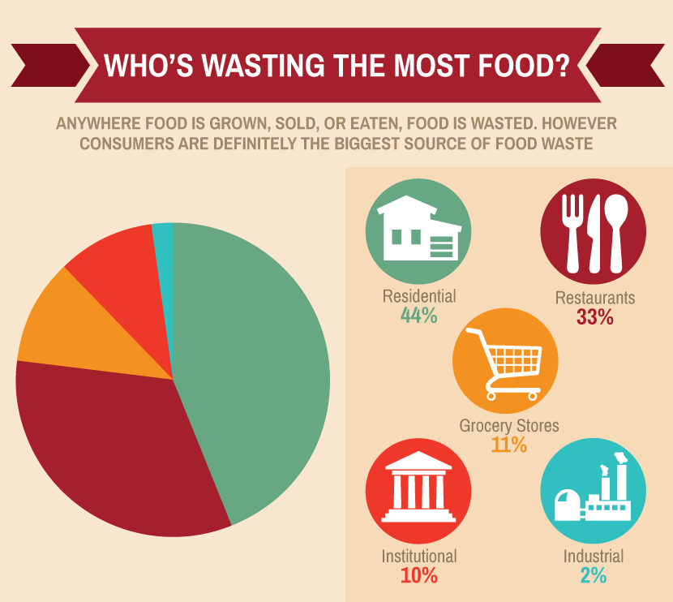

In the most recent years, food waste has become a complex phenomenon attracting the attention of scientists,consumers and activists alike. It’s been termed as a global paradox regarding the manner in which emphasis is put on agriculture to improve food security and then a third of all the food produced ends up as waste. This is according to FAO (Food and Agriculture Organization of the United Nations) report in 2013 indicating that the food waste globally sums to one-third of the total food produced for human consumption ,about 1.6 billion tons a year.The reason it’s becoming a huge concern are the economic, social and environmental costs associated with it. BFCN (Barilla Center for Food and Nutrition) defines food waste as the waste or food losses that occur during industrial processing, distribution and consumption. Understanding and ending food waste has therefore been a priority among nonprofit organizations and governments which leads us to discussions of the causes, effects and solutions of food waste.
One of the top contributors to food wastage is because of lack of appropriate planning on the consumer part. Sometimes people buy lots of food without appropriately making plans on when and how the food will be prepared for consumption.Coupled with the contemporary schedules of work and appointments, people therefore tend to change food preparation plans or fail to remember using it on time. At times it’s out of most people’s control which leads to expiry of the foods after which they are thrown as waste. Also due to lack of appropriate planning, people find themselves having badly prepared food that just doesn’t taste great. It all ends up as waste.